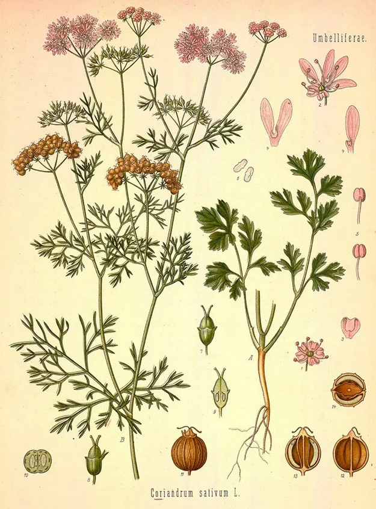

Native Indian Spices
Coriander (Coriandrum sativum)
Coriander or Cilantro is one of the oldest spices in history and has been around since 4th century BC and used by several cuisines worldwide. It looks very similar to Parsley but has a stronger flavor and smell.
It is used in Ayurveda as it is well known for its blood purification and digestive properties and helps cleanse the excretory system.
Apart from the root all parts of the plant including the fruit/seeds are consumed in Indian cuisine. The leaves have a warm, sweet, lemony aroma and are used as garnish or ground with other ingredients to make dips and cleansing beverages. The fruit or seeds are dry roasted, ground and used in a variety of spice mixes.
